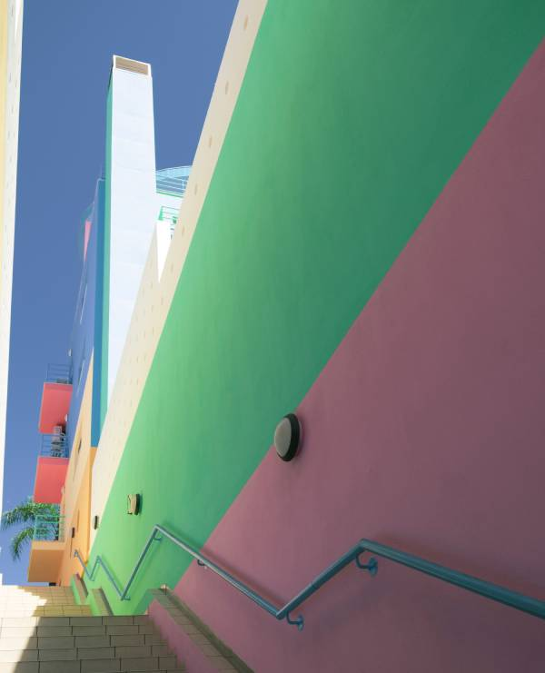
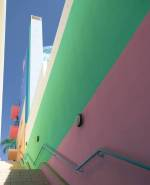
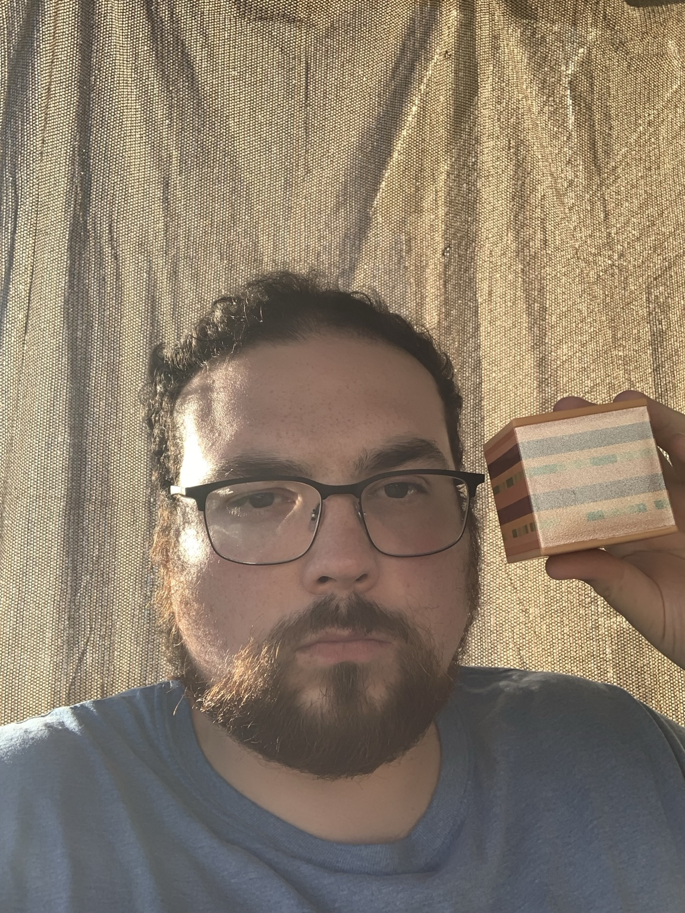

Original Image
Click the links below to view the original photograph in different image formats. Each version demonstrates how changing the format or colors affects the image.
Original JPG Original Image as GIF Grayscale Image Black-and-White Image
This page demonstrates how different image formats, sizes, and proportions affect the appearance and quality of pictures on a website. I will compare images that have been resized using CSS and an image editor to show the differences between proper and improper image manipulation.
I chose this photograph because I liked the colorful architecture and the different shapes and details in the building. The photograph was taken by Jovydas and downloaded from Pexels. It shows a colorful building with green, pink, and yellow walls against a blue sky. The original image is a JPG with dimensions of 3901 x 4815 pixels and a file size of 1.28 MB. I used this photograph to demonstrate different image formats, resizing, and how changing proportions affects image quality.
Click the links below to view the original photograph in different image formats. Each version demonstrates how changing the format or colors affects the image.
Original JPG Original Image as GIF Grayscale Image Black-and-White Image
This example demonstrates how CSS can make an image appear smaller without changing its original file size or dimensions. The image maintains its original proportions to prevent distortion.
This image was resized using an image editor from 3901 x 4815 pixels to 600 x 741 pixels. Unlike CSS resizing, this reduces the actual dimensions and file size of the image while maintaining its original proportions.

These examples demonstrate how changing the width or height of an image without maintaining its original proportions can cause distortion.
These images demonstrate how enlarging a smaller image using CSS can reduce its visual quality. Both images are displayed at the same size, but the second image has fewer original pixels.

For my personal photograph, I chose a picture of myself holding a cube-shaped object next to my face. I selected this image because it demonstrates how geometric shapes can be compared to natural human features. The original photograph is a JPEG with dimensions of 1152 x 1536 pixels and a file size of approximately 0.88 MB. I will use this image to demonstrate different formats, resizing techniques, and image distortion.
Click the links below to view my personal photograph in its original format and three modified versions. Each link opens the image in a new tab.
Original JPEG Original Image as GIF Grayscale Image Black-and-White Image
This example demonstrates how CSS can make my personal photograph appear smaller without changing its original dimensions or file size. The image maintains its original proportions to prevent stretching or distortion.

I used an image editor to resize my personal photograph from 1152 x 1536 pixels to 600 x 800 pixels. This reduces the actual image dimensions while maintaining the original proportions. The resized image requires less storage space than the original.
These examples demonstrate how changing the width or height of my personal photograph without maintaining its original proportions can cause distortion. The cube-shaped object makes the changes in proportions easier to notice.
This comparison demonstrates how enlarging a low-resolution photograph can reduce its quality. Both photographs are displayed at the same size, but the smaller image has fewer pixels and may appear blurry or pixelated.